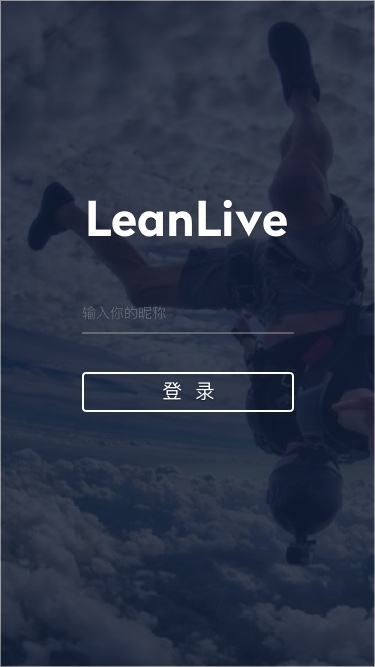
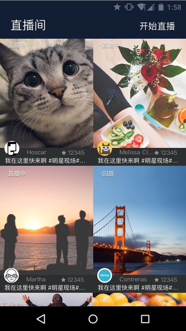

LiveKit 是由 LeanCloud 官方推出的基于 LeanCloud 实时通信与七牛直播服务的 UI 套件，它包含直播、文字聊天、弹幕、送礼物等界面。
针对直播服务，LeanCloud 只按照 聊天的费用标准 收费，而直播相关的内容，LeanCloud 并不参与收费，其产生的费用请在七牛账户中查询。
登录页面
直播间页面
礼物列表
发送弹幕
git clone https://github.com/leancloud/LeanCloudLiveKit-Android.git
本项目包含两个模块：
开发者可以将 LiveKit 导入到自己的 Project 中使用。新建一个名为 LiveDemo 的 Project 用以导入 LiveKit。导入方式有三种：
打开根目录下的 build.gradle，按如下配置修改 allprojects：
build.gradle
allprojects { repositories { jcenter() maven { url "http://mvn.leancloud.cn/nexus/content/repositories/public" } } }
打开 app/build.gradle，在 dependencies 中添加依赖：
app/build.gradle
dependencies { compile ('cn.leancloud.android:livekit:1.0.0') }
LiveKit
leancloudlivekit
LiveDemo
LiveDemo/settings.gradle
include ':leancloudlivekit'
LiveDemo/app/build.gradle
compile project(":leancloudlivekit")
最后只要 Sync Project，这样 LiveKit 就算是导入到项目中了。
一、实现自己的 Application
LiveKit 在使用之前需要进行初始化。初始化逻辑应该放在 Application.onCreate 方法中实现。 在 LiveDemo 中新建一个 Class，名字叫做 LCLKApplication，让它继承自 Application 类，代码如下：
Application.onCreate
public class LCLKApplication extends Application { // appId、appKey 可以在「LeanCloud 应用控制台 > 设置 > 应用 Key」中获取 private final String APP_ID = "********"; private final String APP_KEY = "********"; @Override public void onCreate() { super.onCreate(); // 关于 LCLKAppProvider 请参看下边的文档 LCLiveKit.getInstance().setProfileProvider(LCLKAppProvider.getInstance()); LCLiveKit.getInstance().init(getApplicationContext(), APP_ID, APP_KEY); } }
二、在 AndroidMainfest.xml 中配置 LCLKApplication
AndroidMainfest.xml
LCLKApplication
<application ... android:name=".LCLKApplication" > ... </application>
为了保证通用性和扩展性，让开发者可以更容易将直播与聊天功能嵌入到自己的应用中，该类的具体作用可以参考 用户信息管理类，具体在 livekitapplication Demo 中的示例代码如下：
public class LCLKAppProvider implements LCLiveKitProvider { private static LCLKAppProvider customUserProvider; public synchronized static LCLKAppProvider getInstance() { if (null == customUserProvider) { customUserProvider = new LCLKAppProvider(); } return customUserProvider; } private LCLKAppProvider() { } private static List<LCLKUser> partUsers = new ArrayList<LCLKUser>(); // 此数据均为模拟数据，仅供参考 static { partUsers.add(new LCLKUser("Tom", "Tom", "http://www.avatarsdb.com/avatars/tom_and_jerry2.jpg")); partUsers.add(new LCLKUser("Jerry", "Jerry", "http://www.avatarsdb.com/avatars/jerry.jpg")); partUsers.add(new LCLKUser("Harry", "Harry", "http://www.avatarsdb.com/avatars/young_harry.jpg")); partUsers.add(new LCLKUser("William", "William", "http://www.avatarsdb.com/avatars/william_shakespeare.jpg")); partUsers.add(new LCLKUser("Bob", "Bob", "http://www.avatarsdb.com/avatars/bath_bob.jpg")); } @Override public void fetchProfiles(List<String> userIdList, AVCallback<List<LCLKUser>> profilesCallBack) { List<LCLKUser> userList = new ArrayList<LCLKUser>(); for (String userId : userIdList) { for (LCLKUser user : partUsers) { if (user.getUserId().equals(userId)) { userList.add(user); break; } } } profilesCallBack.internalDone(userList, null); } @Override public void fetchRecordStream(String liveId, AVCallback<String> streamCallback) { streamCallback.internalDone(null, null); } @Override public void fetchPlayStream(String liveId, AVCallback<String> streamCallback) { streamCallback.internalDone("rtmp://live.hkstv.hk.lxdns.com/live/hks", null); } }
LCLiveKit.getInstance().open(clientId, new AVIMClientCallback() { @Override public void done(AVIMClient avimClient, AVIMException e) { if (null == e) { ... } } });
具体内容可以参看 直播观看页面，需要传入参数 LCLKConstants.LIVE_ID，代码如下：
LCLKConstants.LIVE_ID
Intent intent = new Intent(this, LCLKPlayActivity.class); intent.putExtra(LCLKConstants.LIVE_ID, liveId); startActivity(intent);
具体内容可以参看 直播录制页面，需要传入参数 LCLKConstants.LIVE_ID，代码如下：
Intent intent = new Intent(this, LCLKRecordActivity.class); intent.putExtra(LCLKConstants.LIVE_ID, liveId); startActivity(intent);
为了方便用户使用，LiveKit 抽象出了 LiveId 的概念，即直播间 Id，开发者可以按照自己的需求定义此 Id 的格式，只要保证每个直播间的 Id 唯一即可。LiveKit 根据 LCLiveKitProvider 的 fetchRecordStream、fetchPlayStream 来获取直播流。
LCLiveKitProvider
fetchRecordStream
fetchPlayStream
LCLKUser 是 LiveKit 封装的参与聊天的用户，它提供如下属性：
LCLKUser
userId
LCLiveKit.open
avatarUrl
name
LCLiveKitProvider 主要包含三个函数：
fetchProfiles
用来展示用户相关的信息。为了保证通用性和扩展性，让开发者可以更容易将聊天界面嵌入自己的应用中，LiveKit 在设计上抽象出一个「用户体系」接口，LiveKit 内部使用到的头像、用户名等都封装到了 LCLKUser 中。LiveKit 会根据需要通过 fetchProfiles 来获取这些信息，所以需要开发者实现此函数来接入自己的用户体系。
用来获得推流地址，以使 LiveKit 可以上传直播流。关于播放地址的获取可以参考 七牛设置。
用来获取直播地址，以使 LiveKit 观看直播。关于直播地址的获取可以参考 七牛设置。示例代码可以参看 自定义用户体系。
LCLiveKit 是 LiveKit 的核心类，包含几个主要函数：
LCLiveKit
public void init(Context context, String appId, String appKey)
onCreate
public void setProfileProvider(LCLiveKitProvider profileProvider)
public void open(final String userId, final AVIMClientCallback callback)
LCLKRecordActivity 为直播录制的页面，主要包含两个 Fragment：
LCLKRecordActivity
LCLKIMFragment
LCLKRecordFragment
参数 LCLKConstants.LIVE_ID，可以参考 LiveId。LCLKRecordActivity 在录制时会通过 fetchRecordStream 来获取推流地址。
LCLKPlayActivity 为直播的播放页面，同样包含两个 Fragment:
LCLKPlayActivity
LCLKPlayFragment
参数 LCLKConstants.LIVE_ID，可以参考 LiveId。LCLKPlayActivity 在播放时会通过 fetchPlayStream 来获取推流地址。
LiveKit 使用指南 · Android
LiveKit 是由 LeanCloud 官方推出的基于 LeanCloud 实时通信与七牛直播服务的 UI 套件，它包含直播、文字聊天、弹幕、送礼物等界面。
针对直播服务，LeanCloud 只按照 聊天的费用标准 收费，而直播相关的内容，LeanCloud 并不参与收费，其产生的费用请在七牛账户中查询。
登录页面
直播间页面
礼物列表
发送弹幕
准备工作
七牛设置
获取项目
运行 Demo
本项目包含两个模块：
封装了 LeanCloud 直播聊天套件的 UI lib，其目的是让开发者更快速地接入直播与聊天等功能。
为 Demo 项目，它是一个简单的示例项目，用来指导开发者如何使用 leancloudlivekit。
导入方式
开发者可以将 LiveKit 导入到自己的 Project 中使用。新建一个名为 LiveDemo 的 Project 用以导入 LiveKit。导入方式有三种：
Gradle 导入
打开根目录下的
build.gradle，按如下配置修改 allprojects：打开
app/build.gradle，在 dependencies 中添加依赖：源代码导入
LiveKit文件夹中，或者直接下载 zip 包自行解压缩到此文件夹下）；leancloudlivekit复制到LiveDemo根目录；LiveDemo/settings.gradle加入include ':leancloudlivekit'；LiveDemo/app/build.gradle，在 dependencies 中添加compile project(":leancloudlivekit")。最后只要 Sync Project，这样 LiveKit 就算是导入到项目中了。
自定义使用
自定义 Application
一、实现自己的 Application
LiveKit 在使用之前需要进行初始化。初始化逻辑应该放在
Application.onCreate方法中实现。 在 LiveDemo 中新建一个 Class，名字叫做 LCLKApplication，让它继承自 Application 类，代码如下：二、在
AndroidMainfest.xml中配置LCLKApplication自定义用户体系
为了保证通用性和扩展性，让开发者可以更容易将直播与聊天功能嵌入到自己的应用中，该类的具体作用可以参考 用户信息管理类，具体在 livekitapplication Demo 中的示例代码如下：
打开实时通讯
进入直播观看页面
具体内容可以参看 直播观看页面，需要传入参数
LCLKConstants.LIVE_ID，代码如下：进入直播录制页面
具体内容可以参看 直播录制页面，需要传入参数
LCLKConstants.LIVE_ID，代码如下：接口以及组件
LiveId
为了方便用户使用，LiveKit 抽象出了 LiveId 的概念，即直播间 Id，开发者可以按照自己的需求定义此 Id 的格式，只要保证每个直播间的 Id 唯一即可。LiveKit 根据
LCLiveKitProvider的fetchRecordStream、fetchPlayStream来获取直播流。用户
LCLKUser是 LiveKit 封装的参与聊天的用户，它提供如下属性：userIdLCLiveKit.open时传入的 userId。avatarUrlname用户信息管理类
LCLiveKitProvider主要包含三个函数：fetchProfilesfetchRecordStreamfetchPlayStreamfetchProfiles用来展示用户相关的信息。为了保证通用性和扩展性，让开发者可以更容易将聊天界面嵌入自己的应用中，LiveKit 在设计上抽象出一个「用户体系」接口，LiveKit 内部使用到的头像、用户名等都封装到了
LCLKUser中。LiveKit 会根据需要通过fetchProfiles来获取这些信息，所以需要开发者实现此函数来接入自己的用户体系。fetchRecordStream用来获得推流地址，以使 LiveKit 可以上传直播流。关于播放地址的获取可以参考 七牛设置。
fetchPlayStream用来获取直播地址，以使 LiveKit 观看直播。关于直播地址的获取可以参考 七牛设置。示例代码可以参看 自定义用户体系。
核心类
LCLiveKit是 LiveKit 的核心类，包含几个主要函数：public void init(Context context, String appId, String appKey)onCreate中调用，否则可能会引起异常。public void setProfileProvider(LCLiveKitProvider profileProvider)public void open(final String userId, final AVIMClientCallback callback)直播录制页面
LCLKRecordActivity为直播录制的页面，主要包含两个 Fragment：LCLKIMFragment负责其中的实时通讯部分，包含聊天、弹幕、礼物等。LCLKRecordFragment负责直播的展示与推流等。参数
LCLKConstants.LIVE_ID，可以参考 LiveId。LCLKRecordActivity在录制时会通过fetchRecordStream来获取推流地址。直播观看页面
LCLKPlayActivity为直播的播放页面，同样包含两个 Fragment:LCLKIMFragment负责其中的实时通讯部分，包含聊天、弹幕、礼物等。LCLKPlayFragment负责直播的播放。参数
LCLKConstants.LIVE_ID，可以参考 LiveId。LCLKPlayActivity在播放时会通过fetchPlayStream来获取推流地址。